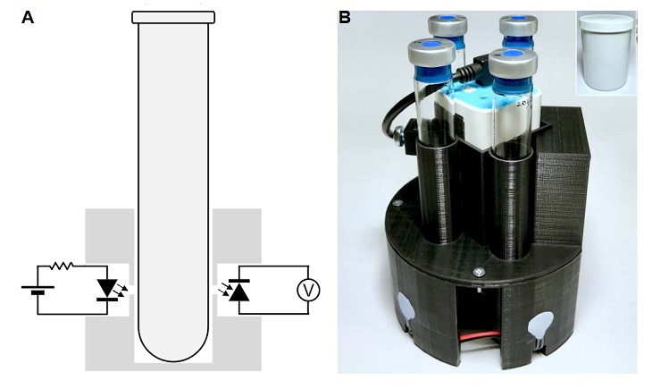

MicrobeMeter: A cheap Turbidimeter

MicrobeMeter is a compact turbidimeter designed to measure aerobic and anaerobic microbial growth dynamics. A formal description of the device is available on bioRxiv. You can buy one pre-assembled for $600, or you can assemble it yourself for $420. You can also download the design for non-commercial use for free if you register with humanetechnologies.
For roughly the same price, you could DIY a low-cost Turbidostat, but it's always great to be able to just buy something simple that works.